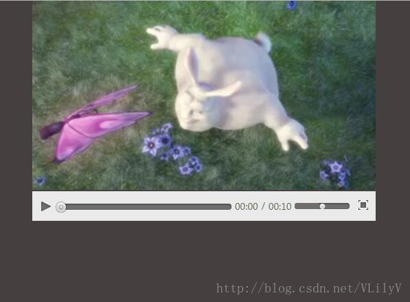

canvas自定义编辑器
效果展示
demo链接下载(喜欢就送颗真心撒)：
canvas自定义编辑器
*{
padding: 0px;
margin: 0px;
}
body{
width: 100%;
background: rgb(69,63,63);
}
.content{
width: 500px;
/*border: 6px solid red;*/
margin: 0 auto;
}
video{
width: 500px;
float: left;
}
.customCon{
box-sizing: border-box;
width: 500px;
height: 45px;
border-top: 2px solid rgb(69,63,63);
background: rgb(234,234,234);
float: left;
position: relative;
}
.stopToP,.playToS{
float: left;
width: 40px;
height: 40px;
/*border: 1px solid red;*/
}
.customCon a:nth-child(1){
background: url(../images/sprite.png) no-repeat 0px 4px;
display: block;
}
.customCon a:nth-child(2){
background: url(../images/sprite.png) no-repeat -40px 4px;
display: none;
}
.progressBox{
width: 250px;
height: 9px;
line-height: 20px;
/*border:1px solid red;*/
background: #706d6d;
border-radius: 10px;
-webkit-border-radius: 10px;
-moz-border-radius: 10px;
margin-top: 18px;
float: left;
box-shadow:inset 0px 1px 4px rgba(0,0,0,0.4),0px 1px 0px rgba(255,255,255,0.4);
-webkit-box-shadow:inset 0px 1px 4px rgba(0,0,0,0.4),0px 1px 0px rgba(255,255,255,0.4);
-moz-box-shadow:inset 0px 1px 4px rgba(0,0,0,0.4),0px 1px 0px rgba(255,255,255,0.4);
}
/*记得宽度都要用 %来表示,且给子元素定位时，
一定要给确认的父元素加position: relative;，因为它的%宽度会和父元素的一样
,注意要减去按钮本身的宽度*/
.progressVideo{
width: 97%;
height: 9px;
/*border:1px solid red;*/
border-radius: 10px;
-webkit-border-radius: 10px;
-moz-border-radius: 10px;
cursor: pointer;
position: relative;
}
.overVideo{
width: 0%;
height: 9px;
display: inline-block;
border-radius: 10px;
-webkit-border-radius: 10px;
-moz-border-radius: 10px;
background: url(../images/play-bar.png) repeat-x;
position: absolute;
}
.overVideo span{
/*border:1px solid red;*/
width: 16px;
height: 16px;
background: url(../images/handle.png) no-repeat;
position: absolute;
top: -3px;
right: -10px;
}
.overTime,.allTime,.spTime{
float: left;
color: rgb(102,107,77);
font-size: 13px;
/*border:1px solid red;*/
margin-top: 13px;
}
.overTime{
margin-left: 5px;
}
.allTime{
margin-right: 5px;
}
.spTime{
font-size: 12px;
margin:12px 5px 0 5px;
}
.progressBox2{
float: left;
width: 80px;
height: 9px;
background: rgb(112,109,109);
border-radius: 10px;
-webkit-border-radius: 10px;
-moz-border-radius: 10px;
cursor: pointer;
margin-top: 17px;
/*border:1px solid blue;*/
box-shadow:inset 0px 1px 4px rgba(0,0,0,0.4),0px 1px 0px rgba(255,255,255,0.4);
-webkit-box-shadow:inset 0px 1px 4px rgba(0,0,0,0.4),0px 1px 0px rgba(255,255,255,0.4);
-moz-box-shadow:inset 0px 1px 4px rgba(0,0,0,0.4),0px 1px 0px rgba(255,255,255,0.4);
}
.progressAudio{
/*border:1px solid red;*/
width: 89%;
height: 9px;
position: relative;
}
.overAudio{
/*border:1px solid red;*/
width: 50%;
height: 9px;
border-radius: 10px;
-webkit-border-radius: 10px;
-moz-border-radius: 10px;
background: rgb(112,109,109);
display: inline-block;
position: absolute;
}
.progressAudio span{
/*display: inline-block;*/
/*border:1px solid red;*/
width: 10px;
height: 9px;
background: url(../images/volume.png) no-repeat;
position: absolute;
top: 0px;
right: -9px;
}
.fullScreen{
float: left;
width: 20px;
height: 20px;
/*border:1px solid red;*/
background: url(../images/sprite.png) no-repeat -160px -8px;
margin: 10px 0 0 10px;
}